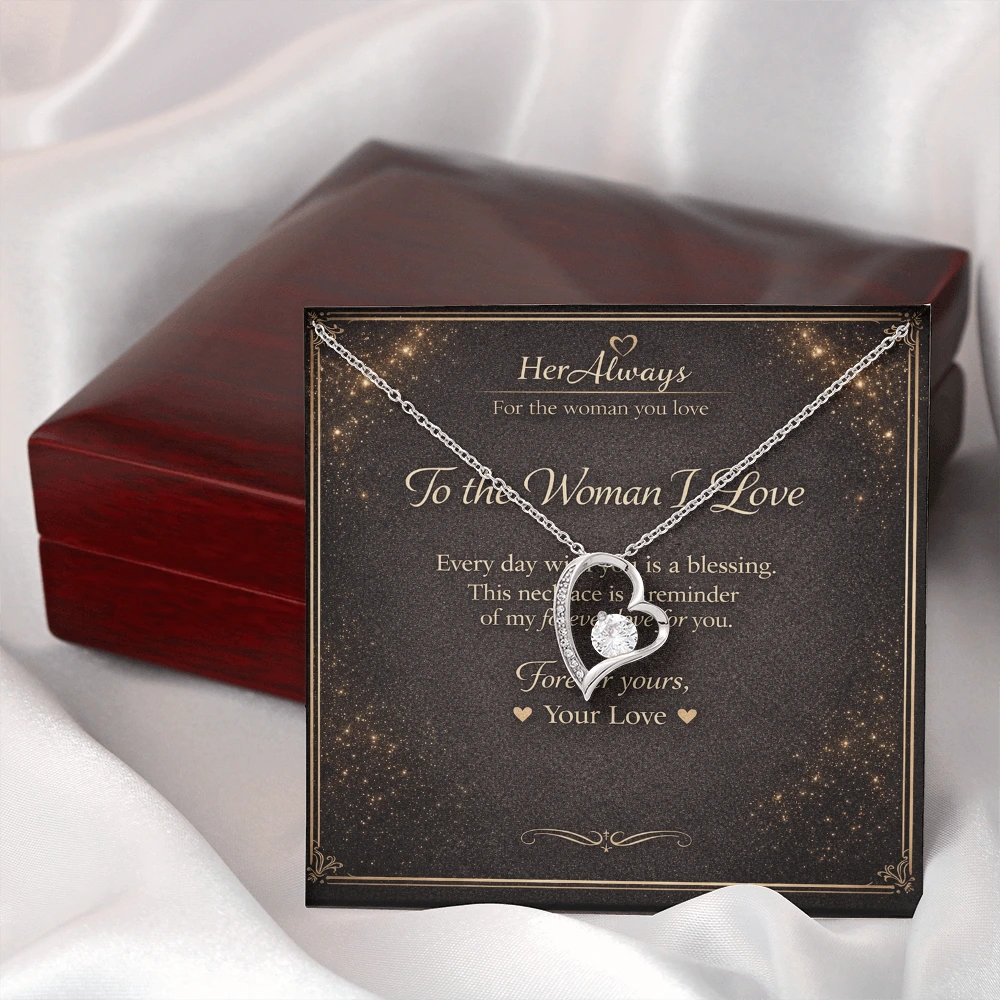
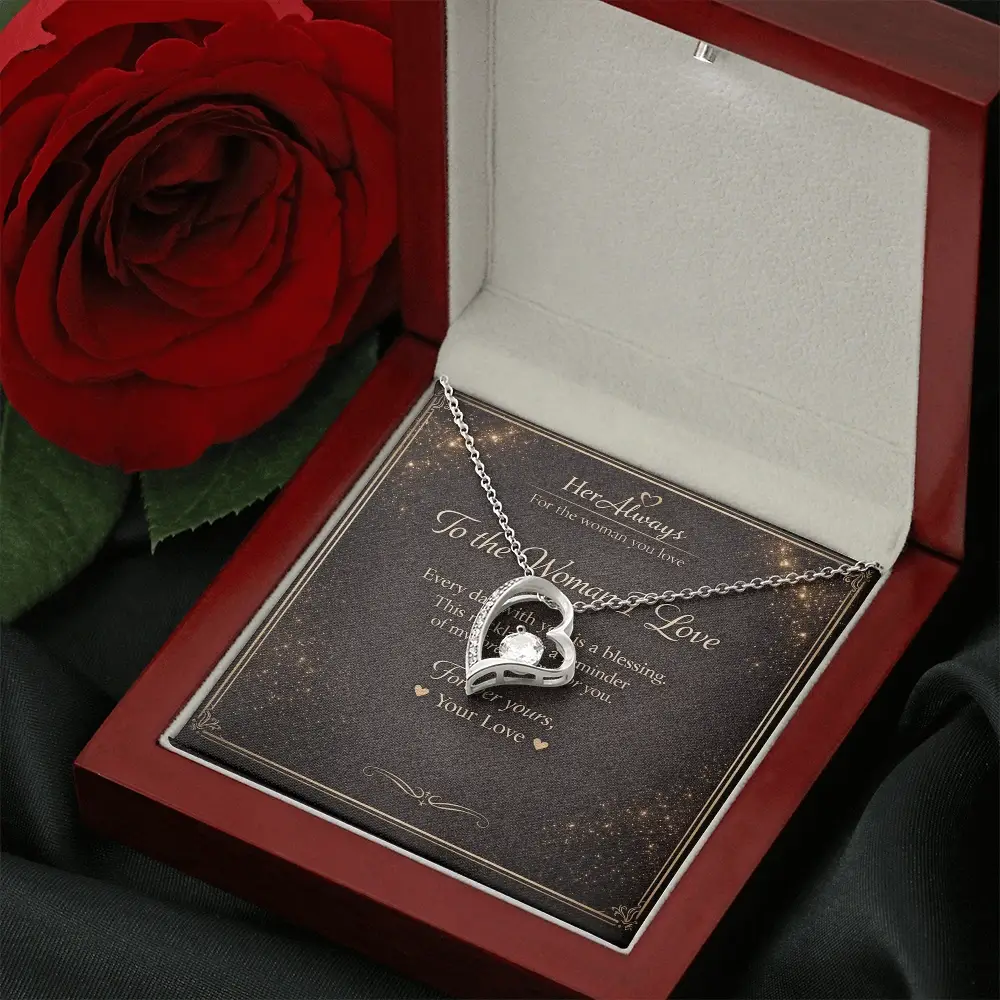

Yes, jewelry is a good Valentine’s Day gift, if she will actually wear it. It lasts long after the day, and it is personal. But it is also the gift most likely to miss, because a piece that does not match her style, metal or size ends up in a drawer. It works when you choose something close to what she already wears, keep the meaning simple, and make sure the price does not feel like pressure. A necklace is the safest choice, because it needs no sizing.
Below: a quick check, when to skip jewelry, which types are safest, how much to spend, and when to order for Valentine’s Day 2027.
Quick Check: Should You Give Her Jewelry?
5 checks | When to skip | Which jewelry | What to spend | Order-by date | FAQ
| Go ahead if… | Choose something else if… |
|---|---|
| You know what she wears daily (gold or silver, delicate or bold) | You have no idea of her taste and cannot find out |
| She enjoys jewelry or has dropped hints | She likes to choose her own jewelry |
| The meaning fits where you are as a couple | It would say more than you mean, like an engagement-style ring |
| The price feels like a gift | The price would make her feel she owes you |
Not sure? A simple pendant necklace in the metal she wears most is the lowest-risk jewelry gift.
5 Checks Before You Buy Valentine’s Jewelry
1. Will she actually wear it?
This matters more than price. Look at what she wears most days. Is it gold or silver? Small and delicate, or bold? Studs or hoops? A large silver piece for a woman who only wears fine gold chains will not get worn, however much it cost.
2. Do you know her taste, or can you find out?
Check photos of her from the last few months, see what is in her jewelry box, or ask a close friend or her sister. You can also take her shopping so she chooses, which many women say they would love.
3. Does the meaning fit your relationship?
Symbols send a message. A heart or infinity says love. A ring, especially a solitaire, can read as a proposal. See our guide to 15 necklace symbols and what they mean and what giving jewelry symbolizes.
4. Does the price feel right?
A gift should not create an obligation. A modest piece she wears every day is better than an expensive one that makes her uncomfortable. More on this in the price section.
5. Can it be returned?
Jewelry is hard to resell, so check the return policy before you buy, wherever you buy. Ours is on the returns page: because each piece is personalized, we do not accept returns for change of mind. If you are unsure of her taste, choose a simple style she is likely to wear, such as a heart, rather than a bigger gift.
When Jewelry Is Not the Right Valentine’s Gift
Skip jewelry, or change the plan, in these cases:
- She buys and chooses her own jewelry. Take her shopping, or give her a note and a gift card to pick a piece together.
- She prefers experiences. A dinner or a day out she has wanted can beat a piece she never wears.
- You cannot find out her style. Pick a different gift this year, or let her choose.
- It is too early and too big. A ring or an expensive piece in a very new relationship can feel rushed.
Best of both: a simple necklace and a handwritten note, plus the dinner you were already planning. It is the gift plus the time together.
What Women Say About Getting Jewelry for Valentine’s Day
To see the real doubts, I read an r/jewelry thread where women answered this exact question. It is not a survey, but the pattern was clear. Most said yes, with conditions:
- It has to be something they will wear, in their metal and style.
- It should be on their wishlist, or chosen together.
- Some prefer to pick their own, and would rather have a dinner.
- An expensive gift can feel like an obligation, and jewelry is hard to return.
- A few said they dislike heart shapes.
That is why this guide focuses on wearability, taste and pressure, not on how romantic jewelry sounds.
Which Jewelry Is Safest to Give?
| Type | Why it works | Watch out for |
|---|---|---|
| Necklace | No sizing, easy to wear daily, and a simple pendant suits most styles | The symbol and metal must suit her |
| Earrings | Easy to wear every day | Needs pierced ears, and styles vary a lot |
| Bracelet | Casual and easy to wear | Needs her wrist size, and may not suit her work |
| Ring | Very symbolic | Needs her ring size, and can look like a proposal |
If you are choosing a necklace, see our guide to the 12 best necklace gifts for your girlfriend.
Is Jewelry a Good Valentine’s Gift for a New Girlfriend?
Yes, if it is small and easy to wear. In a new relationship, keep the piece modest and the meaning light: a simple pendant and a short, sincere note. Skip rings and expensive pieces, which can make things feel rushed. The same applies to a first Valentine’s Day together.
How Much Should You Spend on Valentine’s Jewelry?
There is no right number. Spend what you can afford without strain, and what is in proportion to the relationship. A thoughtful, modest piece beats an expensive one that makes her feel she owes you.
For reference, our necklaces cost from $59.95 to $109.95. To be clear, they are affordable fashion jewelry, not fine jewelry: finishes over base metal or stainless steel with cubic zirconia, not solid gold or diamonds. If she wants fine jewelry, take her shopping. If you want a meaningful piece with your own words on the card, that is what we make.
Jewelry vs Flowers, Chocolate or Dinner
| Gift | How long it lasts | Main risk |
|---|---|---|
| Jewelry | Years, if she wears it | Taste, size and pressure |
| Flowers | About a week | Feels expected |
| Chocolate | A few days | Feels generic |
| A dinner or day out | A memory | Needs planning, and leaves nothing to keep |
You do not have to pick one. A necklace with flowers or a dinner is a common, safe combination.
Make Jewelry Feel More Personal: Add Your Own Words
The card often matters as much as the piece. Every HerAlways necklace comes in a gift box with a printed message card. You can type your own message when you order. If you leave it blank, the sample message shown in the product photo is used.

Short lines work best. A few ideas:
- “I chose this because you are the one I think of first.”
- “Wear it on the days you need to remember how loved you are.”
- “Our first Valentine’s Day. Many more to come.”
- “Not a big gesture, just a small one that is meant.”
For more, see 70+ necklace gift messages for your girlfriend and how to give a necklace to your girlfriend.
When to Order for Valentine’s Day 2027
Valentine’s Day 2027 falls on a Sunday, February 14. Shipping is free. US orders arrive in about 6 to 12 business days and international orders in 6 to 15, so order by January 20, 2027 to be safe anywhere. Earlier is better. If you are past that date, give her a card and plan a dinner, and send the necklace afterward with a note.
A Simple Necklace and Your Own Words

If you have decided on a necklace, the Forever Love Necklace is a classic heart design that suits most styles, with a message card you write yourself.
See the Forever Love NecklaceFAQ: Jewelry as a Valentine’s Day Gift
Is jewelry a good Valentine’s Day gift?
Yes, if she will actually wear it. Jewelry lasts beyond the day and is personal, but a piece that does not match her style, metal or size will sit in a drawer. Choose something close to what she already wears and keep the price free of pressure.
Is jewelry too serious for Valentine’s Day?
Only if it suggests a commitment you have not talked about. A simple pendant necklace feels romantic. A ring that looks like an engagement ring can feel like a question, so avoid it unless you mean it.
Is jewelry a good Valentine’s gift for a new girlfriend?
Yes, if it is modest and easy to wear. A small necklace with a short, sincere note works well early on. Skip rings and expensive pieces, which can make a new relationship feel rushed.
What if I do not know her style?
Look at the jewelry she wears every day, ask a close friend, or take her shopping so she can choose. If you must guess, a classic simple pendant in the metal she wears most is the safest pick.
Does Valentine’s jewelry have to be expensive or have diamonds?
No. What she notices is whether it suits her and whether you put thought into it. A modest piece she wears daily beats an expensive one she never wears.
Are heart-shaped necklaces tacky?
Some women dislike them, others love them. Check whether she wears hearts or other romantic symbols. If she prefers plain jewelry, choose a quieter symbol such as infinity or a love knot.
When should I order Valentine’s jewelry?
Order early. Shipping is free. US orders arrive in about 6 to 12 business days and international orders in 6 to 15, so for Valentine’s Day 2027 order by January 20 to be safe anywhere.